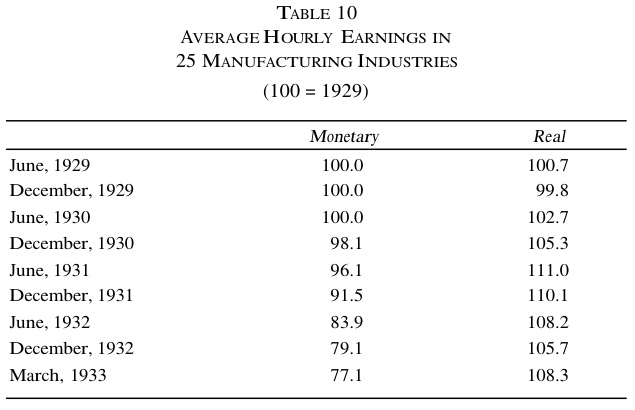

The fact that Hoover sought reelection in the midst of the deepest and worst depression in American history, and in the face of unprecedented unemployment did not lower his satisfaction as he looked back upon his record. After all, as he said in his acceptance speech for the Presidential renomination:
[W]e might have done nothing. That would have been utter ruin. Instead, we met the situation with proposals to private business and to Congress of the most gigantic program of economic defense and counterattack ever evolved in the history of the Republic. We put it into action.No one could accuse him of being slack in inaugurating the vast interventionist program:
No government in Washington has hitherto considered that it held so broad a responsibility for leadership in such times. . . . For the first time in the history of depression, dividends, profits, and the cost of living have been reduced before wages have suffered.At St. Paul, at the end of his campaign, Hoover summarized the measures he had taken to combat the depression: higher tariffs, which had protected agriculture and prevented much unemployment, expansion of credit by the Federal Reserve, which Hoover somehow identified with “protection of the gold standard”; the Home Loan Bank system, providing long-term capital to building-and-loan associations and savings banks, and enabling them to expand credit and suspend foreclosures; agricultural credit banks which loaned to farmers; Reconstruction Finance Corporation (RFC) loans to banks, states, agriculture, and public works; spreading of work to prevent unemployment; the extension of construction and public works; strengthening Federal Land Banks; and, especially, inducing employers to maintain wage rates. Wage rates “were maintained until the cost of living had decreased and the profits had practically vanished. They are now the highest real wages in the world.” But was there any causal link between this fact and the highest unemployment rate in American history? This question Hoover ignored.
Hoover had, indeed, “placed humanity before money, through the sacrifice of profits and dividends before wages,” but people found it difficult to subsist or prosper on “humanity.” Hoover noted that he had made work for the unemployed, prevented foreclosures, saved banks, and “fought to retard falling prices.” It is true that “for the first time” Hoover had prevented an “immediate attack upon wages as a basis of maintaining profits,” but the result of wiping out profits and maintaining artificial wage rates was chronic, unprecedented depression. On the RFC, Hoover proclaimed, as he did for the rest of his program, “Nothing has ever been devised in our history which has done more for those whom Mr. Coolidge has aptly called the ‘common run of men and women.’” Yet, after three years of this benevolent care, the common man was worse off than ever.
Hoover staunchly upheld a protective tariff during his campaign, and declared that his administration had successfully kept American farm prices above world prices, aided by tariffs on agricultural products. He did not seem to see that this price-raising reduced foreign demand for American farm products. He hailed work-sharing without seeing that it perpetuated unemployment, and spoke proudly of the artificial expansion by business of construction “beyond present needs” at his request in 1929–30, without seeing the resulting malinvestment and business losses.
While claiming to defend the gold standard, Hoover greatly shook public confidence in the dollar and helped foster the ensuing monetary crisis by revealing in his opening campaign speech that the government had almost decided to go off the gold standard in the crisis of November, 1931—an assertion heatedly denied by conservative Democratic Senator Carter Glass.
The spirit of the Hoover policy was perhaps best summed up in a public statement made in May, before the campaign began, when he sounded a note that was to become all too familiar to Americans in later years—the military metaphor:
The battle to set our economic machine in motion in this emergency takes new forms and requires new tactics from time to time. We used such emergency powers to win the war; we can use them to fight the depression.
Yet, if New Deal socialism was the logic of Hoover’s policy, he cautiously extended the logic only so far. He warned at St. Paul of the strange and radical ideas prevalent in the Democratic Party: the schemes for currency tinkering, the pension bill, the commodity dollar, the pork-barrel bill, the plans for veterans’ bonuses and over $2 billion of greenback issue, make-work schemes, and an agitation for a vast $9 billion-a-year public works program. It was also to Hoover’s credit that he resisted the pressure of Henry Harriman, who urged Hoover to adopt the Swope Plan for economic fascism during his campaign, a plan which was soon to bear fruit in the National Recovery Administration (NRA).
As in most depressions, the property rights of creditors in debts and claims were subjected to frequent attack, in favor of debtors who wished to refuse payment of their obligations with impunity. We have noted the Federal drive to weaken the bankruptcy laws. States also joined in the attack on creditors. Many states adopted compulsory debt moratoria in early 1933, and sales at auction for debt judgments were halted by Wisconsin, Iowa, Minnesota, Nebraska, and South Dakota. Governor Clyde Herring of Iowa asked insurance and mortgage companies to stop foreclosing mortgages. Life insurance companies protested that they were being very lenient, yet in many areas the courts would not enforce foreclosures for insurance companies, enabling many borrowers arrogantly to refuse to pay. Minnesota forbade foreclosures on farms or homes for several years.1
Most important of the attacks on creditors’ property occurred during the currency crisis that marked the end of the Hoover term. After the election, as the new Presidential term approached, people grew more and more apprehensive, and properly so, of the monetary policies of the incoming president. Dark rumors circulated about the radicalism of Roosevelt’s advisers, and of their willingness to go off the gold standard. Consequently, not only did gold “hoarding” by foreigners develop momentum, but even gold hoarding by domestic citizens. For the first time in the depression, American citizens were beginning to lose confidence in the dollar itself. The loss of confidence reached its apogee in February, 1933, the month before the Roosevelt inaugural. In that one month, the monetary gold stock fell by $173 million, and money in circulation increased by the phenomenal amount of $900 million, the reflection of domestic loss of confidence. Money in circulation totaled $5.4 billion at the end of January, and $6.3 billion by the end of February. $700 million of this increase was in Federal Reserve notes, and $140 million in gold coin and gold certificates.
The Federal Reserve did its best to combat this deflationary pull on bank reserves, but its inflationary measures only served to diminish confidence in the dollar still further. Thus, in the month of February alone, Uncontrolled Reserves fell by $1,089 million. The FRS greatly inflated its Controlled Reserves: bills discounted more than doubled to increase by $308 million, bills bought multiplied tenfold to increase by $305 million, $103 million of U.S. governments were purchased. All in all, controlled reserves increased by $785 million during this month; net reserves fell by $305 million.
The impact of this fall on the money supply was very strong. Total currency and deposits fell from $45.4 billion at the end of 1932 to $41.7 billion at mid-1933. Total money supply fell from $64.72 to $61.61 billion over 1933, and all or more of this fall took place in the first half of the year.2 A more sensitive measure of change, net demand deposits and time deposits at weekly reporting member banks in 101 cities, totaled $16.8 billion on February 22, and fell to $14.1 billion by March 8. Bank failures skyrocketed during this period. The number of commercial bank failures increased from 1,453 in 1932 to 4,000 in 1933 (most of which took place in the first quarter), with deposits of failed banks increasing from $706 million to $3.6 billion in the same period.3 Thus, despite the gigantic efforts of the Fed, during early 1933, to inflate the money supply, the people took matters into their own hands, and insisted upon a rigorous deflation (gauged by the increase of money in circulation)—and a rigorous testing of the country’s banking system in which they had placed their trust.
The reaction to this growing insistence of the people on claiming their rightful, legally-owned property, was a series of vigorous attacks on property right by state after state. One by one, states imposed “bank holidays” by fiat, thus permitting the banks to stay in business while refusing to pay virtually all of the just claims of their depositors (a pattern that had unfortunately become almost traditional in America since the Panic of 1819). Nevada had begun the parade as early as October, 1932, but only 9 out of 20 banks took advantage of the state holiday, the others remaining open.4 Louisiana declared a brief holiday for the hard-pressed New Orleans banks in early February, but the bank holiday movement began in earnest with the proclamation of an eight-day holiday on February 14, 1933, by Governor William Comstock of Michigan.5 This action precipitated the bank runs and deflation of the latter part of February. For if one state could, with impunity, destroy property right in this manner, then others could—and did—and depositors began an intense scramble to take their money out of the banks.
It is at times like thesethat the speciousness of apologists for our banking system hailing fractional reserves as being as sound as the building of bridges—on estimate that only some inhabitants of the area will cross it at any one time—becomes patently evident. For no one has a legal property ownership in the bridge, as they do in their bank deposits. At times like these, also, it becomes clear that bank deposits are not really money—even on a paper, let alone a gold standard—but mere moneysubstitutes, which serve as money ordinarily, but reveal their true identity when nationwide confidence begins to collapse.
On the request of bankers for government to save them from the consequences of their own mistakes, state after state, beginning with Indiana, declared moratoria and bank holidays. Governor Ritchie of Maryland declared a three-day bank holiday on February 24. On February 27, the member banks of the Cleveland Clearing House Association decided arbitrarily to limit withdrawals from all their branches, and no state officials acted to stop this blatant infringement of property right. They were promptly followed by Akron and Indianapolis banks. On February 27, the Ohio, Pennsylvania, and Delaware legislatures authorized the state banking officials to restrict the right of withdrawal of deposits. The states adopted this procedure quickly and virtually without debate, the laws being rammed through on the old political excuse that the taxpaying and voting public must be kept in ignorance of the situation in order to prevent panic.6 In such a manner do the “people’s representatives” characteristically treat their supposed principals.
One of the ironic aspects of this situation was the fact that many national banks, which had worked hard to keep themselves in an at least relatively sound position, did not want to avail themselves of the special privilege of bank holiday, and had to be coerced into doing so. As Willis puts it:
[i]n many cases, the national banks . . . had no wish to join in the holiday provisions of the localities in which they were situated. They had, in such cases, kept themselves in position to meet all claims to which they might be subject, and they desired naturally to demonstrate to depositors and customers their ability to meet and overcome the obstacles of the time, both as a service to such customers and as an evidence of their own trustworthiness. There followed what was deemed . . . the necessity or desirability of coercing . . . the sound banks of the community into acceptation of the standard thought essential for the less liquid and less well-managed institutions.7
By March 4, every state in the Union had declared a bank holiday, and the stage was set for President Roosevelt’s dramatic and illegal closing of all the banks. The stage was set, by the way, with the full collaboration of the outgoing administration; in late February, Congress, with the acquiescence of President Hoover, passed a law permitting national banks to cooperate with state bank holidays. And the Comptroller of the Currency obligingly issued a proposed draft of a uniform bank holiday act to aid the various state legislatures in drafting their bills.
President Roosevelt closed down all the banks throughout the nation for an entire week, from March 6 to 13, with many banks remaining closed even longer.8 It was a final stroke of irony that Roosevelt’s only semblance of legal ground for this decree was the Trading with the Enemy Act of World War I! Restrictions against so-called “hoarding” were continued afterward, and much hoarded gold returned to the banks following a Federal Reserve threat to publish a list, for full public scorn, of the leading “gold hoarders.”9 It soon became clear that, with the advent of the Roosevelt administration, the American gold standard was doomed.
There have been a great many recriminations, particularly from the Hoover camp, about Roosevelt’s “failure to cooperate,” when he was President-elect, in solving the banking crisis. Certainly it is true that fear of Roosevelt’s impending monetary radicalism, and Senator Glass’s investigations forcing Charles E. Mitchell to resign as President of the National City Bank, contributed to the banking panic. But the important fact is that the banking system had arrived at a critical impasse. Usually, in the placid course of events, radical (in the sense of far-reaching) economic reforms, whether needed or not, meet the resistance and inertia of those who drift with the daily tide. But here, in the crisis of 1933, the banks could no longer continue as they were. Something had to be done. Essentially, there were two possible routes. One was the course taken by Roosevelt; the destruction of the property rights of bank depositors, the confiscation of gold, the taking away of the people’s monetary rights, and the placing of the Federal Government in control of a vast, managed, engine of inflation. The other route would have been to seize the opportunity to awaken the American people to the true nature of their banking system, and thereby return, at one swoop, to a truly hard and sound money.
The laissez-faire method would have permitted the banks of the nation to close—as they probably would have done without governmental intervention. The bankrupt banks could then have been transferred to the ownership of their depositors, who would have taken charge of the invested, frozen assets of the banks. There would have been a vast, but rapid, deflation, with the money supply falling to virtually 100 percent of the nation’s gold stock. The depositors would have been “forced savers” in the existing bank assets (loans and investments). This cleansing surgical operation would have ended, once and for all, the inherently bankrupt fractional-reserve system, would have henceforth grounded loans and investments on people’s voluntary savings rather than artificiallyextended credit, and would have brought the country to a truly sound and hard monetary base. The threat of inflation and depression would have been permanently ended, and the stage fully set for recovery from the existing crisis. But such a policy would have been dismissed as “impractical” and radical, at the very juncture when the nation set itself firmly down the “practical” and radical road to inflation, socialism, and perpetuation of the depression for almost a decade.
President Hoover, of course, did not even come close to advocating the hard money, laissez-faire policy. Hoover and his partisans have woven the myth that all would have been well if only Roosevelt had “cooperated” with Hoover before the inaugural, but just what was this projected cooperation to be? Largely, a joint agreement on partial or total national bank holidays, and on a Hoover proposal for temporary federal guarantees of bank deposits—inflationist and statist measures which Roosevelt was soon to adopt.10, 11 Furthermore, as a pièce de résistance, agitation for going off the gold standard kept proceeding from high up in the Hoover administration itself; specifically from Secretary of Treasury Mills and from Undersecretary Arthur Ballantine.12
Mr. Hoover left office in March, 1933, at the very depth of the greatest depression in American history. Production had fallen by more than one-half: industrial production had been at an index of 114 in August, 1929, and then fell to 54 by March, 1933. Unemployment was persisting at nearly 25 percent of the labor force, and gross national product had also fallen almost in half. Hardest hit was investment, especially business construction, the latter falling from about $8.7 billion in 1929 to $1.4 billion in 1933. This is not the only indication that the depression hit hardest in the capital goods industries.
The index of non-durable manufacturing production fell from 94 to 66 from August, 1929, to March, 1933—a decline of 30 percent; the index of durable manufactures fell from 140 to 32, in the same period, a decline of 77 percent. Factory employment fell by 42 percent; pig iron production decreased by an astounding 85 percent; the value of construction contracts fell from July, 1929, by an amazing 90 percent, and the value of building permits by 94 percent. On the other hand, department store sales fell by less than 50 percent over the period. Taking durable goods industries (e.g., building, roads, metals, iron and steel, lumber, railroad, etc.) Col. Leonard P. Ayres estimated that their total employment fell from 10 million in 1929 to 4 million in 1932–1933, while employment in consumer goods industries (e.g., food, farming, textiles, electricity, fuel, etc.) only fell from 15 million to 13 million in the same period.13 Stock prices (industrials) fell by 76 percent during the depression, wholesale prices fell by 30 percent, and the total money supply declined by one-sixth.
What of wage rates? We saw that the Hoover policies managed to keep wage rates very high during the first two years of the depression. By 1932, however, with profits wiped out, the pressure became too great, and wage rates fell considerably. Total fall over the 1929–1933 period, however, was only 23 percent—less than the decline in wholesale prices. Therefore, real wage rates, for the workers still remaining employed, actually increased. An excellent inquiry into the wage-employment problem during the depression has been conducted by Mr. Sol Shaviro, in an unpublished essay.14 Shaviro shows that in 25 leading manufacturing industries, the following was the record of monetary, and real, average hourly earnings during these years.
We thus see that money wage rates held up almost to the prosperity-par until the latter half of 1931, while real wage rates actually increased by over 10 percent. Only then did a monetary wage decline set in, but still without a very appreciable reduction in real wage rates from the 1931 peak. It should here be noted that, in contrast to Keynesian warnings, prices fell far less sharply after wage rates began to drop, than before. From July, 1929, to June, 1931, wholesale prices fell from 96.5 to 72.1, or at a rate of fall of 1 per month, while from June, 1931, to February, 1933, prices fell to 59.8, or at a rate of .65 per month.15
Shaviro points out that businessmen, particularly the large employers, were taken in by the doctrine that they should pursue an “enlightened” high-wage policy, a doctrine not only fed to them by the veiled threats of the President, but also by economists and labor leaders, on the grounds of “keeping up purchasing power” to combat the depression. The drop in wage rates had been more extensive and far more prompt in the far milder 1921 depression; in fact, even moneywage rates rose slightly until September, 1930.16 More wage cuts took place in smaller than in larger firms, since the smaller firms were less “enlightened,” and furthermore, were not as fully in the public (and governmental) view. Furthermore, executive, and then other, salaries were generally reduced considerably more than wage rates. In fact, one reason that the eventual wage declines proved ineffective was the pseudo-humanitarian morality that governed the cuts when finally made: thus, reductions were automatically graduated in proportion to the income brackets of the workers, the higher brackets suffering greater declines. And reductions were often softened for workers with dependents. In short, instead of trying to adjust wage rates to marginal productivities, as was desperately needed, the firms allocated the “loss in income on the most just and equitable [sic] basis . . . [actuated by the] desire to make the burden of reduced income fall as lightly as possible on those least able to suffer the loss.” In short, each man was penalized according to his ability and subsidized according to the need for which he had voluntarily assumed the responsibility (his dependents).
It was typical that executive salaries were the ones cut most promptly and severely, even though the great unemployment problem was not among the executives but among rank-and-file workers. As a result of this tragically wrong-headed policy, the wage cuts certainly stirred up little worker resentment, but also did little to help unemployment. In sum, management’s attitude looked not for what “reduction can most easily be made, but rather how can necessary payroll economies be accomplished with the least hardship for all concerned.” This policy only aggravated the general hardship, as will always happen when business strays from its proper goal of maximizing profits.17
While real average hourly earnings rose, actual hours worked in industry fell drastically during the depression. Weekly hours averaged over 48 in 1929, and fell to less than 32 by mid-1932. In no previous depression had hours worked fallen by more than 10 percent. This was a form of reduced employment caused by the highwage policy, a form, as we have seen, particularly recommended by the Hoover administration. As a result of the fall in hours worked and in money wage rates, average weekly earnings fell by over 40 percent during the depression, and real weekly earnings fell by over 30 percent. But hardest hit were the unemployed, the percentage of whom rose to 25 percent by 1932–1933, and reached 47 percent in the selected manufacturing industries. The fall in manhours worked, combined with the fall in average hourly earnings, caused a truly precipitate drop in total factory payrolls—the base of that very “purchasing power” that the “enlightened” policy was supposed to sustain. Total payroll fell by over 29 percent in 1930, a year when money wage rates (average hourly earnings) rose to a higher level than 1929, and payroll had fallen by almost 71 percent by March, 1933. Real payroll fell by over 60 percent in the same period.
The purchasing power theorists often declaim that the key to prosperity is national income going more to employees and less to profits: these conditions were filled to their hearts’ content during the depression. For aggregate profits were negative during 1932 and 1933.
Although unions were not particularly important in these years, amounting to only 6 percent of the labor force, Professor Levinson has shown that unions maintained higher wage rates for their employed workers than did comparable non-union workers.18 This demonstrates the power of unions to maintain money wage rates during a depression, thereby aggravating the unemployment problem, and reinforcing the effects of Hoover’s injunctions and “enlightened” economic theory. Wage rates of selected union workers fell only 6–12 percent over the 1929–1932 period, while the rates of non-union workers fell by 14–36 percent.
Levinson points out that there is a close relationship between the strength of the union and the maintenance of wage rates in each specific industry. Thus, the union in the men’s clothing industry had been greatly weakened in the 1920s by moves of industry from union to non-union areas, so that it had to accept wage reductions during the depression “to protect the solvency of the organized employees”; wage rates in this industry fell by 31 percent during the 1929–32 period.
Sharing-the-work by putting employees on reduced time was another favorite panacea of the Hoover administration. Yet, in 1931 the President’s Emergency Committee for Employment reported that, in a sample of manufacturing, plants with under 1,000 employees suffered an unemployment problem in 75 percent of the cases, whereas 96 percent of the plants with over 5,000 workers suffered from unemployment. Eighty-eight percent of the larger firms had engaged in work-sharing, while only 53 percent of the smaller firms did so. In a business and industrial conference of August 26, 1932, Hoover reported that work-sharing had been used for hundreds of thousands of workers.
The Conference appointed a subcommittee headed by Walter Teagle, President of Standard Oil of New Jersey, to urge more work-spreading, in hopes of putting two million people back to work. Standard Oil set an example by hiring 3000 more workers in addition to its total of 23,000. The slogan adopted was: “job security by job sharing.” In September, William J. Barrett, of the President’s Organization on Unemployment Relief, delivered a comprehensive report on work-spreading. Barrett admitted that “management has undergone increased costs in providing employment for additional workers.” He further revealed that the largest proportion of worksharing occurred in the most distressed industries: i.e., the capital goods industries. This illustrates the role that work-sharing played in aggravating and perpetuating unemployment. Thus, in a sample of industries, the largest proportion of part-time workers occurred in such fields as machinery (84.9 percent), rubber, iron, and steel (79.3 percent), metals, stone, clay, and glass, while the smallest proportion occurred in railroads (22.3 percent), foods (26.6 percent), retail and wholesale, and commercial establishments (20.4 percent). The average part-time proportion for the entire sample was 56.1 percent.19
Mr. Hoover met the challenge of the Great Depression by acting quickly and decisively, indeed almost continuously throughout his term of office, putting into effect “the greatest program of offense and defense” against depression ever attempted in America. Bravely he used every modern economic “tool,” every device of progressive and “enlightened” economics, every facet of government planning, to combat the depression. For the first time, laissez-faire was boldly thrown overboard and every governmental weapon thrown into the breach. America had awakened, and was now ready to use the State to the hilt, unhampered by the supposed shibboleths of laissez-faire. President Hoover was a bold and audacious leader in this awakening. By every “progressive” tenet of our day, he should have ended his term a conquering hero; instead he left America in utter and complete ruin—a ruin unprecedented in length and intensity.
What was the trouble? Economic theory demonstrates that only governmental inflation can generate a boom-and-bust cycle, and that the depression will be prolonged and aggravated by inflationist and other interventionary measures. In contrast to the myth of laissez-faire, we have shown in this book how government intervention generated the unsound boom of the 1920s, and how Hoover’s new departure aggravated the Great Depression by massive measures of interference. The guilt for the Great Depression must, at long last, be lifted from the shoulders of the free-market economy, and placed where it properly belongs: at the doors of politicians, bureaucrats, and the mass of “enlightened” economists. And in any other depression, past or future, the story will be the same.